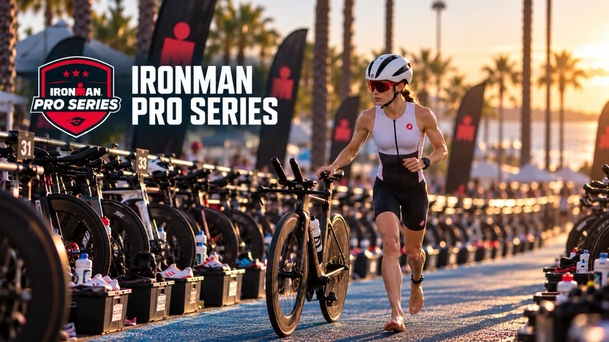
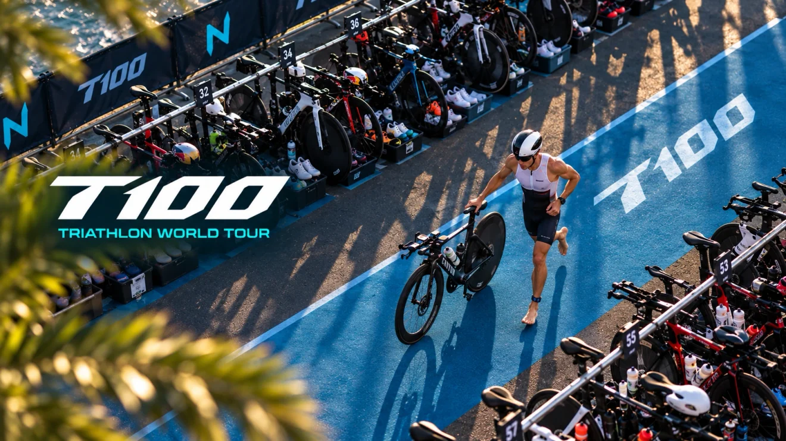

Each frame is 390×166 CSS px, matching the 2.35:1 cover crop. Original WebP / 1320px WebP q85 / 1320px AVIF q65. Open at normal browser zoom on DPR3 for the mobile comparison; original files remain linked for pixel inspection. No PNG-source substitution.



Landscape and portrait widths above 440px continue using the original artwork. Quality review is local browser evidence, not physical iPhone approval.